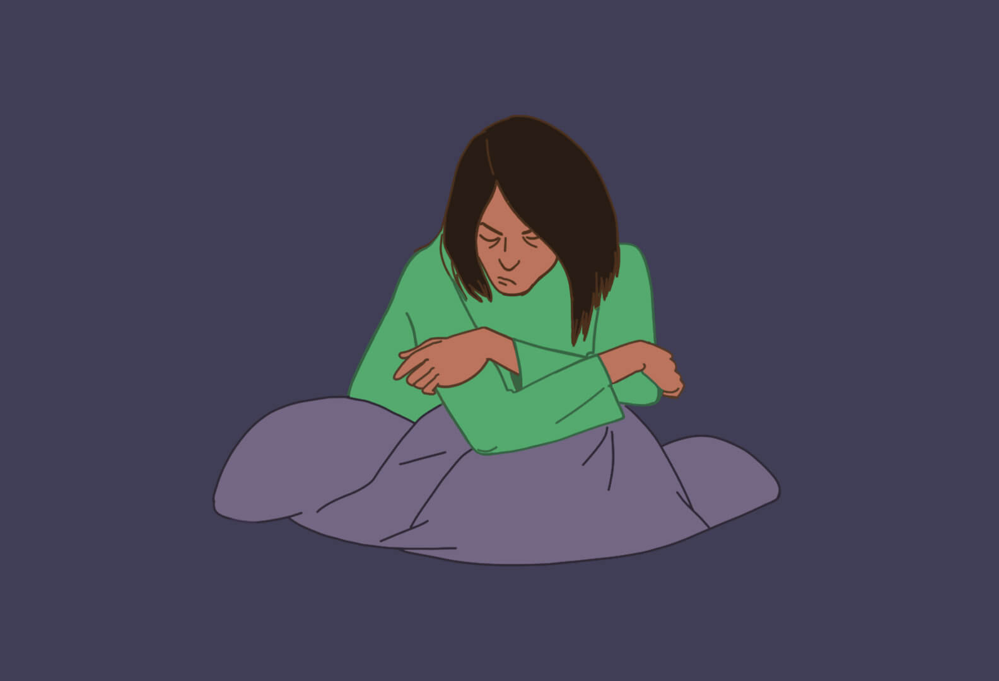
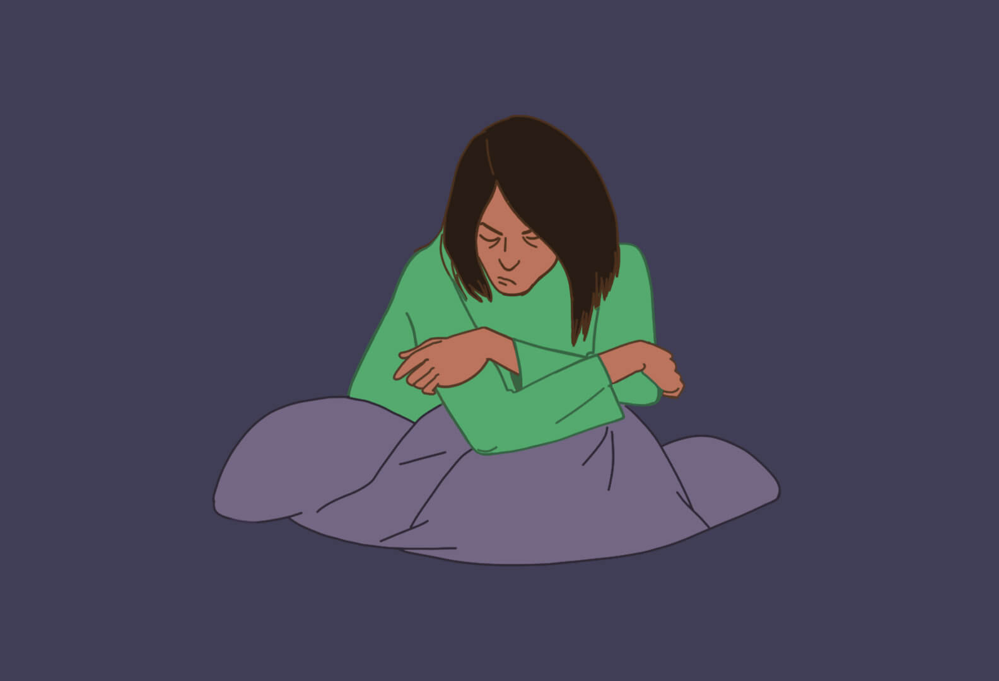
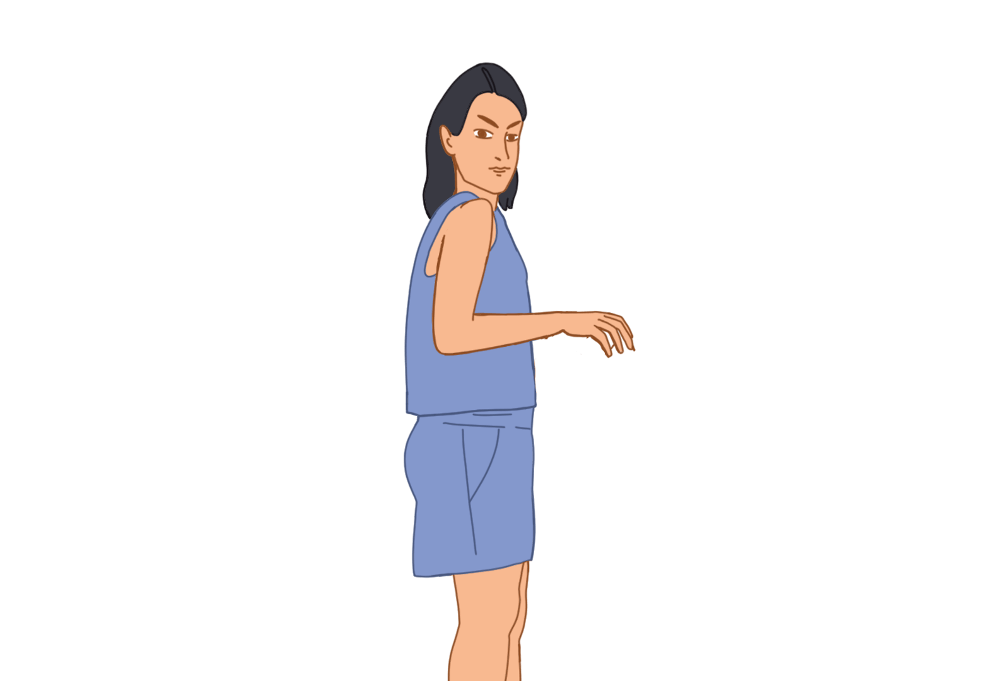
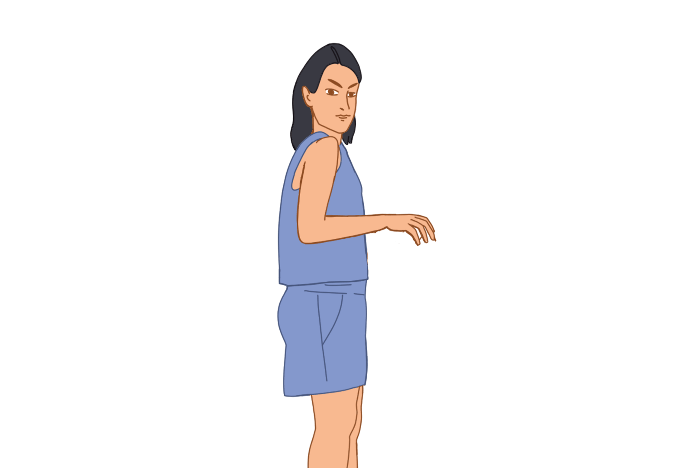
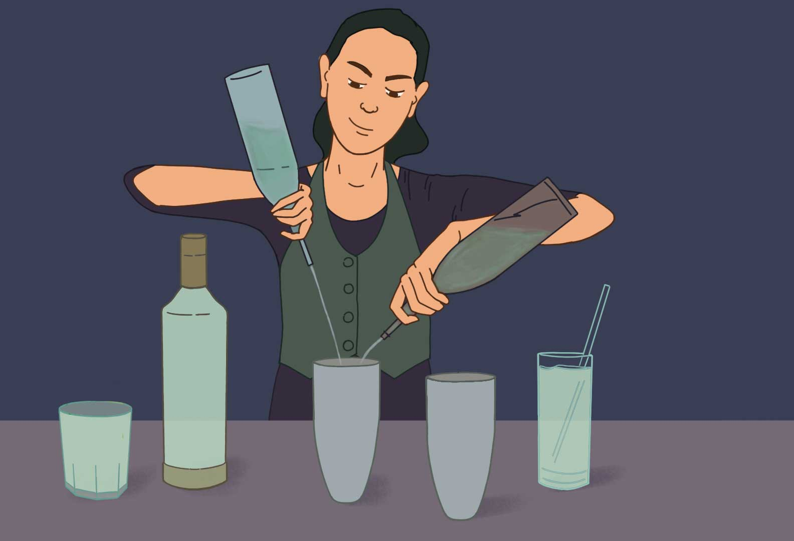
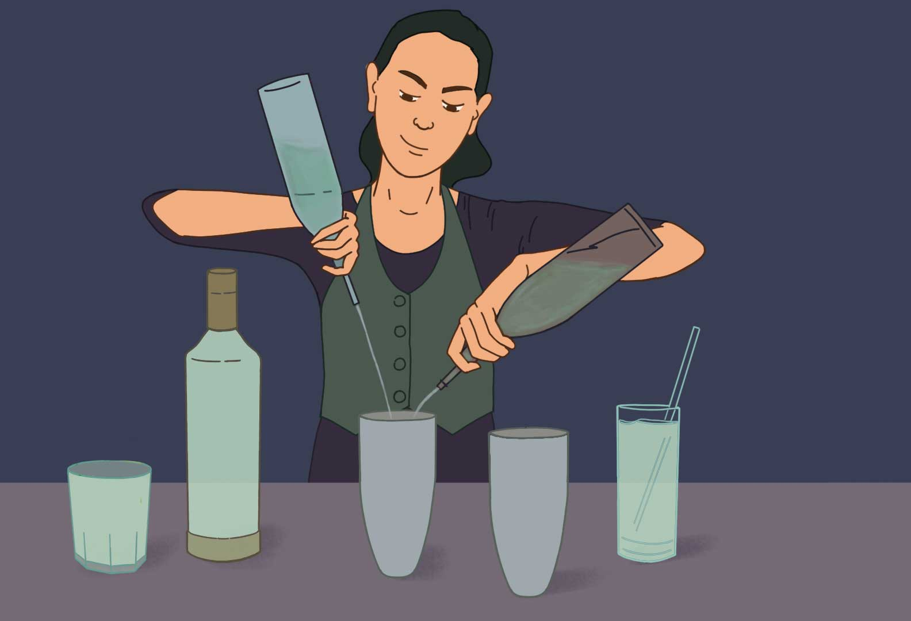

Sumit suggests she undergo an abortion. Neha wants her child, but she has always been taught a 'patni ka dharm' and Sumit constantly reminds her of financial restraints, so they undergo an abortion.
Neha insists on having the baby, which angers Sumit. He won’t be able to accept the baby, he says. Neha believes in herself, and gives birth to the child.
 

Your story ends here. Because you chose to abort, Neha suffers psychological stress from being forced to undergo an abortion. She loses trust in Sumit.
What if you'd have made a better choice?
You made a great decision! The couple have a healthy baby girl, and they name her Riya! Sweet, no?
Politely tell her to stop her outdoor games, and immediately ask her mother about such things, because these are 'women's issues'.
Tell Riya everything she needs to know about menstruation, and motivate her for the upcoming inter-school basketball competition.

You chose to neglect Riya's genuine curiosity. The story ends for you, since Riya learns that her normal bodily functions are 'shameful'. She never feels comfortable asking questions about her body or her health again, putting herself at risk.
What if you'd have made a better choice?
Excellent! Since you decided to chat, Riya establishes a friendly, frank relationship in the house, making space for more open, healthy conversations.
Understand that dadi may be right. She feels guilty about not listening to dadi maa and reasons that if women before her did it, there's no harm in learning domestic chores.
Believe vehemently in the idea of choice. She doesn't want to disrespect her dadi, but explains to her clearly why girls need not be expected to do anything that boys are not.

 

You have discouraged Riya, and therefore, the tale ends for you. Riya begins to believe that compromise is the way out of everything. She ends up constantly pleasing people and forgetting her own goals in life.
What if you'd have made a better choice?
You are totally in sync with Riya - total badass!
Why take so much panga for a job? She'd only be inviting trouble in a place filled with alcoholic men. Sumit would surely help her find new naukri.
Riya is confident in her ability to handle her own affairs, and is excited about this new direction - she takes the job.
 

Arey nahin! Your story cannot proceed, because you want Riya to do something she doesn't want, that is, to be a teacher at a neighbourhood school. "Your mom has been teaching all her life and is happy. You'll love it too!" Sumit insists. Riya takes the job, but she is never fulfilled.
What if you'd have made a better choice?
Riya starts working at the bar. It's a job she loves. She knows how to shut off sexist guests, and makes sure drinks don’t become an excuse for harassment. She still makes time for a couple of basketball matches in a stadium nearby.